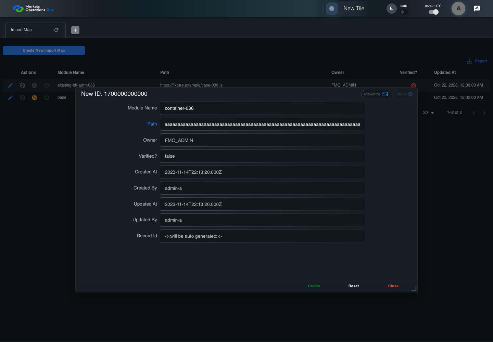
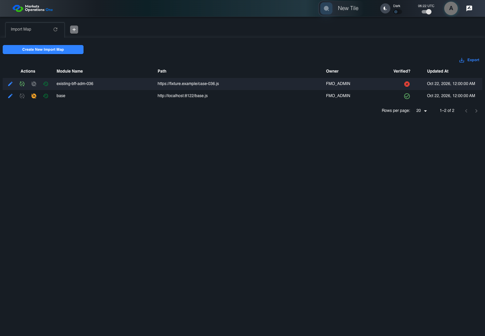
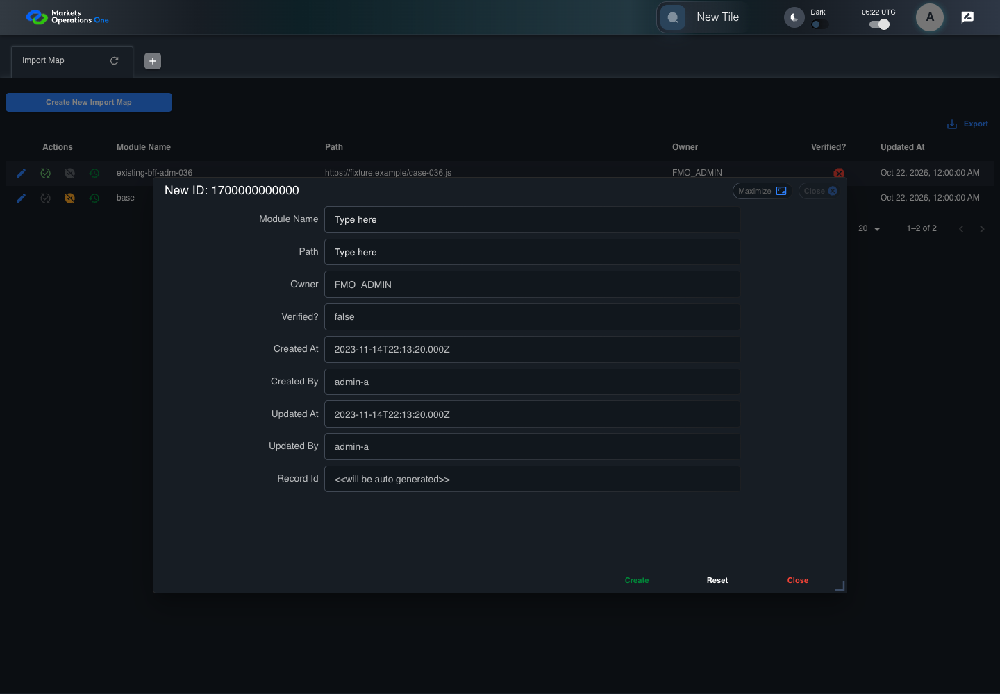
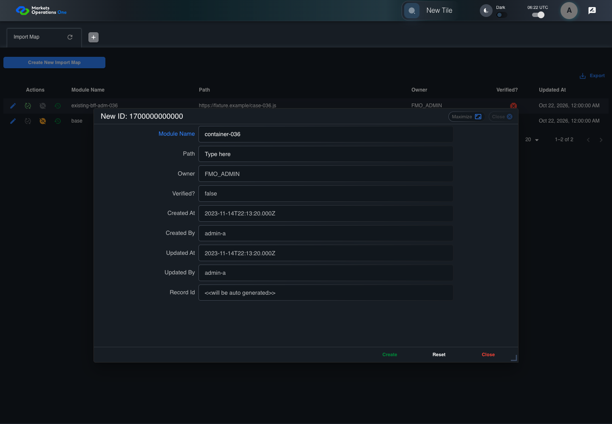
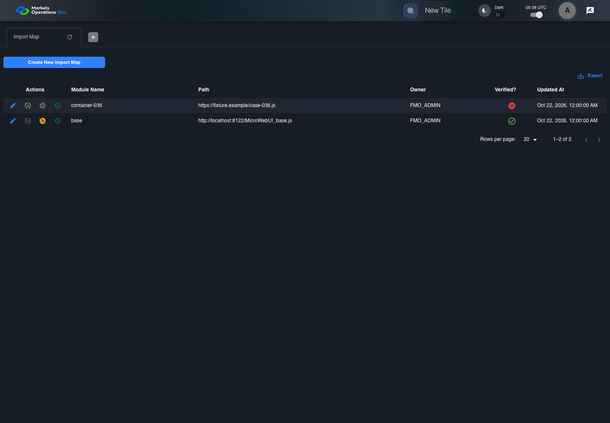
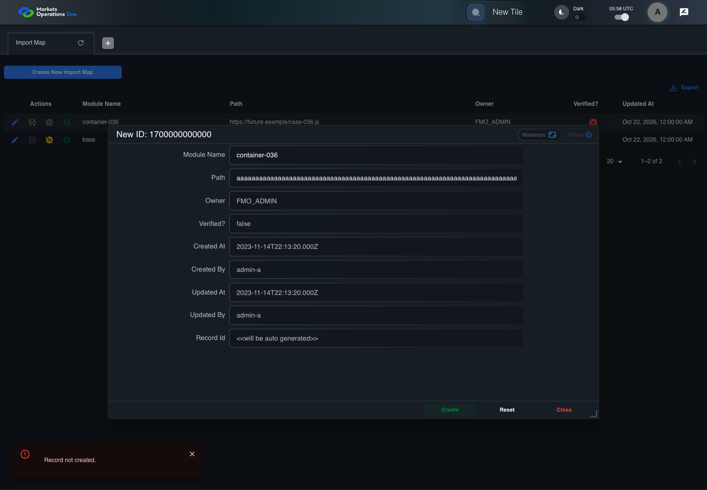

All canonical cases
BFF-ADM-036: Import Map Path schema boundary at 256 characters Business acceptance remains unverified. Owner: unknown. Review the canonical definition and fixture limits before acceptance.
Latest local result: PASS Business acceptance: NOT_ESTABLISHED.
The latest local result describes execution. The historical definition review assesses the case design before execution.
Latest step screenshot evidence: COMPLETE . 13/13 canonical steps have execution screenshots.
Canonical Gherkin definition . Definition version: 2. SHA-256: 3d4df823bba05490b8f10b3ea03cd52ed0819bbfe3ecfa079568f36c728b8f16.
Historical definition review (preflight): UNVERIFIED A definition review FAIL can coexist with local PASS. The definition failed preflight quality checks.
This historical review does not change the latest execution result. Resolve definition gaps before business acceptance.
Canonical Gherkin steps Feature: Admin storage boundary
@BFF-ADM-036
Scenario: Import Map Path schema boundary at 256 characters
Given Admin A uses subject "admin-a" with role "FMO_ADMIN" in an isolated authenticated browser
And the controlled Import Map fixture records the initial grid rows and persisted values
And the controlled creation clock returns 1700000000000 milliseconds
And the baseline fixture data defines "Module Name" as "container-036"
And the baseline fixture data defines "Path" as "https://fixture.example/case-036.js"
And the prepared database uses the inspected migration DDL and reports its applied schema revision
When Admin A clicks the button labeled "Create New Import Map" on the Import Map administration page
Then the dialog titled "new ID: 1700000000000" is visible on the Import Map administration page
When Admin A fills the textbox labeled "Module Name" with "container-036" in dialog "new ID: 1700000000000"
And Admin A fills the textbox labeled "Path" with exactly 256 ASCII "a" characters in dialog "new ID: 1700000000000"
And Admin A clicks the button labeled "Create" in dialog "new ID: 1700000000000"
Then the Import Map data grid with column "Record Id" row identifiers and loaded field values equal the initial grid snapshot on the Import Map administration page
And the alert with severity "error" in the portal snackbar contains the exact text "Record not created." Acceptance and evidence limits: NO_COMPLETE_REAL_APPLICATION_BINDING, CANONICAL_REVIEW_OR_EVIDENCE_UNRESOLVED.
Planned essential canonical frames: 3. Plan completeness requires separate review.
Latest attempt BFF-ADM-036 current BFF administration through actual UI PASS · application/run-072/bff-adm-036-current-bff-administration-through-actual-ui-a69d7f968738-attempt-1 · ACTUAL_APPLICATION_LOCAL_SERVICES
Actual current React and exact-current BFF admin controllers/services/JPA with actual migration DDL in disposable PostgreSQL. Controlled OUD/EMS2 identities and local Spring bootstrap. Fixture SQL seeds/mutates isolated records; service errors are actual database errors. Undefined agreed messages remain unresolved acceptance.
2026-10-22T06:42:24.844Z to 2026-10-22T06:42:29.301Z
Assertions and result · Artifact manifest · Exact run inputs and source hashes
Result SHA-256: 2dd7f6de8c3f930ca6f2f8380f6ca5b7daa183127eb67fdc820259cbe7e955b3 Playwright trace
Machine observations Screenshot capture: CAPTURED. Named frames: 14.
Step screenshot evidence: COMPLETE. 13/13 canonical steps have execution screenshots.
Canonical step timeline Given Admin A uses subject "admin-a" with role "FMO_ADMIN" in an isolated authenticated browser
1. step-01 Visible state after step 1: Given Admin A uses subject "admin-a" with role "FMO_ADMIN" in an isolated authenticated browser
2026-10-22T06:42:26.930Z · 1440×100088491e265d51d5d3f1ab19b18d7e164df195e5c258c280082a8f84ba4a8d0951 And the controlled Import Map fixture records the initial grid rows and persisted values
2. step-02 Visible state after step 2: And the controlled Import Map fixture records the initial grid rows and persisted values
2026-10-22T06:42:27.062Z · 1440×100088491e265d51d5d3f1ab19b18d7e164df195e5c258c280082a8f84ba4a8d0951 And the controlled creation clock returns 1700000000000 milliseconds
3. step-03 Visible state after step 3: And the controlled creation clock returns 1700000000000 milliseconds
2026-10-22T06:42:27.112Z · 1440×100088491e265d51d5d3f1ab19b18d7e164df195e5c258c280082a8f84ba4a8d0951 And the baseline fixture data defines "Module Name" as "container-036"
4. step-04 Visible state after step 4: And the baseline fixture data defines "Module Name" as "container-036"
2026-10-22T06:42:27.168Z · 1440×100088491e265d51d5d3f1ab19b18d7e164df195e5c258c280082a8f84ba4a8d0951 And the baseline fixture data defines "Path" as "https://fixture.example/case-036.js"
5. step-05 Visible state after step 5: And the baseline fixture data defines "Path" as "https://fixture.example/case-036.js"
2026-10-22T06:42:27.229Z · 1440×100088491e265d51d5d3f1ab19b18d7e164df195e5c258c280082a8f84ba4a8d0951 And the prepared database uses the inspected migration DDL and reports its applied schema revision
6. step-06 Visible state after step 6: And the prepared database uses the inspected migration DDL and reports its applied schema revision
2026-10-22T06:42:27.278Z · 1440×100088491e265d51d5d3f1ab19b18d7e164df195e5c258c280082a8f84ba4a8d0951 When Admin A clicks the button labeled "Create New Import Map" on the Import Map administration page
7. step-07 Visible state after step 7: When Admin A clicks the button labeled "Create New Import Map" on the Import Map administration page
2026-10-22T06:42:27.488Z · 1440×10009d7d2101d2cd1600f63e5f54118c294f0046d159b81edb452f3b82ba059c0202 Then the dialog titled "new ID: 1700000000000" is visible on the Import Map administration page
8. step-08 Visible state after step 8: Then the dialog titled "new ID: 1700000000000" is visible on the Import Map administration page
2026-10-22T06:42:27.565Z · 1440×10003e9999d4e23b8373e41b1bc18a0c45a9908917d064b4cc99db97141343dd0cbe When Admin A fills the textbox labeled "Module Name" with "container-036" in dialog "new ID: 1700000000000"
9. step-09 Visible state after step 9: When Admin A fills the textbox labeled "Module Name" with "container-036" in dialog "new ID: 1700000000000"
2026-10-22T06:42:27.982Z · 1440×1000958873af6c4b9a153a803360cf6827bc819a0fc24ae0cf9160556c971b7ed10c And Admin A fills the textbox labeled "Path" with exactly 256 ASCII "a" characters in dialog "new ID: 1700000000000"

10. step-10 Visible state after step 10: And Admin A fills the textbox labeled "Path" with exactly 256 ASCII "a" characters in dialog "new ID: 1700000000000"
2026-10-22T06:42:28.415Z · 1440×10009e8433d2b80e5477d2a2faa2af7983dadf981496e9dcb954af2257cdbc638458 And Admin A clicks the button labeled "Create" in dialog "new ID: 1700000000000"
11. step-11 Visible state after step 11: And Admin A clicks the button labeled "Create" in dialog "new ID: 1700000000000"
2026-10-22T06:42:28.682Z · 1440×100037440d9d505b94f100e9cfaef8077082b2106a26a6646b44ac81cf401636f1b2 Then the Import Map data grid with column "Record Id" row identifiers and loaded field values equal the initial grid snapshot on the Import Map administration page
12. step-12 Visible state after step 12: Then the Import Map data grid with column "Record Id" row identifiers and loaded field values equal the initial grid snapshot on the Import Map administration page
2026-10-22T06:42:28.830Z · 1440×10003175ea90e77a1ad5eae9c0f1c591105e185f6aa9ee6943b64bbaebe4bd091f8b And the alert with severity "error" in the portal snackbar contains the exact text "Record not created."
13. step-13 Visible state after step 13: And the alert with severity "error" in the portal snackbar contains the exact text "Record not created."
2026-10-22T06:42:28.880Z · 1440×10003175ea90e77a1ad5eae9c0f1c591105e185f6aa9ee6943b64bbaebe4bd091f8b Additional named frames 14. final-result The final visible state after the named test assertions.
2026-10-22T06:42:28.980Z · 1440×10003175ea90e77a1ad5eae9c0f1c591105e185f6aa9ee6943b64bbaebe4bd091f8b Screenshots establish visible state only. Assertions and traces support functional claims.
Earlier attempt history (2) Earlier attempt PASS (superseded by latest PASS) BFF-ADM-036 current BFF administration through actual UI PASS · application/run-066/bff-adm-036-current-bff-administration-through-actual-ui-a69d7f968738-attempt-1 · ACTUAL_APPLICATION_LOCAL_SERVICES
Actual current React and exact-current BFF admin controllers/services/JPA with actual migration DDL in disposable PostgreSQL. Controlled OUD/EMS2 identities and local Spring bootstrap. Fixture SQL seeds/mutates isolated records; service errors are actual database errors. Undefined agreed messages remain unresolved acceptance.
2026-10-22T06:22:54.405Z to 2026-10-22T06:22:57.842Z
Assertions and result · Artifact manifest · Exact run inputs and source hashes
Result SHA-256: d80cab72c68957abb682143863b8b47ff6e611ccb90285bbfe94e3ce4cbd47a3 Playwright trace
Machine observations Screenshot capture: CAPTURED. Named frames: 14.
Step screenshot evidence: COMPLETE. 13/13 canonical steps have execution screenshots.
Canonical step timeline Given Admin A uses subject "admin-a" with role "FMO_ADMIN" in an isolated authenticated browser

1. step-01 Visible state after step 1: Given Admin A uses subject "admin-a" with role "FMO_ADMIN" in an isolated authenticated browser
2026-10-22T06:22:55.882Z · 1440×10004960c761ca749e2dfecce2ba434279b7d219585e7b827eef6146567af8243b30 And the controlled Import Map fixture records the initial grid rows and persisted values
2. step-02 Visible state after step 2: And the controlled Import Map fixture records the initial grid rows and persisted values
2026-10-22T06:22:55.995Z · 1440×10004960c761ca749e2dfecce2ba434279b7d219585e7b827eef6146567af8243b30 And the controlled creation clock returns 1700000000000 milliseconds
3. step-03 Visible state after step 3: And the controlled creation clock returns 1700000000000 milliseconds
2026-10-22T06:22:56.027Z · 1440×1000272fcb1561ba5e6b2f637235dd14642b47ee74d92be33731cb132c8a3b712bf5 And the baseline fixture data defines "Module Name" as "container-036"
4. step-04 Visible state after step 4: And the baseline fixture data defines "Module Name" as "container-036"
2026-10-22T06:22:56.060Z · 1440×10004960c761ca749e2dfecce2ba434279b7d219585e7b827eef6146567af8243b30 And the baseline fixture data defines "Path" as "https://fixture.example/case-036.js"
5. step-05 Visible state after step 5: And the baseline fixture data defines "Path" as "https://fixture.example/case-036.js"
2026-10-22T06:22:56.093Z · 1440×1000272fcb1561ba5e6b2f637235dd14642b47ee74d92be33731cb132c8a3b712bf5 And the prepared database uses the inspected migration DDL and reports its applied schema revision
6. step-06 Visible state after step 6: And the prepared database uses the inspected migration DDL and reports its applied schema revision
2026-10-22T06:22:56.125Z · 1440×10004960c761ca749e2dfecce2ba434279b7d219585e7b827eef6146567af8243b30 When Admin A clicks the button labeled "Create New Import Map" on the Import Map administration page
7. step-07 Visible state after step 7: When Admin A clicks the button labeled "Create New Import Map" on the Import Map administration page
2026-10-22T06:22:56.284Z · 1440×1000b375527c45c90906e2e216a88800b9e6e77bd0b0ff90b7ee8a8bb0225bb829af Then the dialog titled "new ID: 1700000000000" is visible on the Import Map administration page

8. step-08 Visible state after step 8: Then the dialog titled "new ID: 1700000000000" is visible on the Import Map administration page
2026-10-22T06:22:56.331Z · 1440×10003d4b4b0b8c3cb2ce90de2b657ab00b3b42ff883dbaa93678d3d02522bf257fc9 When Admin A fills the textbox labeled "Module Name" with "container-036" in dialog "new ID: 1700000000000"

9. step-09 Visible state after step 9: When Admin A fills the textbox labeled "Module Name" with "container-036" in dialog "new ID: 1700000000000"
2026-10-22T06:22:56.733Z · 1440×10007482424a6c278c4d1479c9f98b96c5e19a38f009716256ebf8f51cf15f437f5d And Admin A fills the textbox labeled "Path" with exactly 256 ASCII "a" characters in dialog "new ID: 1700000000000"
10. step-10 Visible state after step 10: And Admin A fills the textbox labeled "Path" with exactly 256 ASCII "a" characters in dialog "new ID: 1700000000000"
2026-10-22T06:22:57.151Z · 1440×10006e5684bc4cbf6da506625e032aeac08bf80dba5f1d61442dd39155c18f0614d0 And Admin A clicks the button labeled "Create" in dialog "new ID: 1700000000000"
11. step-11 Visible state after step 11: And Admin A clicks the button labeled "Create" in dialog "new ID: 1700000000000"
2026-10-22T06:22:57.383Z · 1440×100013ac3b737eaf26f24710489fb330911d39e61fecc692bf657fdba99b00513da8 Then the Import Map data grid with column "Record Id" row identifiers and loaded field values equal the initial grid snapshot on the Import Map administration page
12. step-12 Visible state after step 12: Then the Import Map data grid with column "Record Id" row identifiers and loaded field values equal the initial grid snapshot on the Import Map administration page
2026-10-22T06:22:57.485Z · 1440×1000fffd039cf6d4c61dd5ef8af2bbabcbfd412476dec34f89d00c0556a2845ee09d And the alert with severity "error" in the portal snackbar contains the exact text "Record not created."
13. step-13 Visible state after step 13: And the alert with severity "error" in the portal snackbar contains the exact text "Record not created."
2026-10-22T06:22:57.531Z · 1440×1000fffd039cf6d4c61dd5ef8af2bbabcbfd412476dec34f89d00c0556a2845ee09d Additional named frames 14. final-result The final visible state after the named test assertions.
2026-10-22T06:22:57.597Z · 1440×1000fffd039cf6d4c61dd5ef8af2bbabcbfd412476dec34f89d00c0556a2845ee09d Screenshots establish visible state only. Assertions and traces support functional claims.
Earlier attempt PASS (superseded by latest PASS) BFF-ADM-036 current BFF administration through actual UI PASS · application/run-062/bff-adm-036-current-bff-administration-through-actual-ui-a69d7f968738-attempt-1 · ACTUAL_APPLICATION_LOCAL_SERVICES
Actual current React and exact-current BFF admin controllers/services/JPA with actual migration DDL in disposable PostgreSQL. Controlled OUD/EMS2 identities and local Spring bootstrap. Fixture SQL seeds/mutates isolated records; service errors are actual database errors. Undefined agreed messages remain unresolved acceptance.
2026-10-22T05:58:49.328Z to 2026-10-22T05:58:53.927Z
Assertions and result · Artifact manifest · Exact run inputs and source hashes
Result SHA-256: b1c0a5d69ca3bfd2f3bbaba219aa6a4d72ce0e0fdc2a475a51508aff4d0de51c Playwright trace
Machine observations Screenshot capture: CAPTURED. Named frames: 14.
Step screenshot evidence: COMPLETE. 13/13 canonical steps have execution screenshots.
Canonical step timeline Given Admin A uses subject "admin-a" with role "FMO_ADMIN" in an isolated authenticated browser

1. step-01 Visible state after step 1: Given Admin A uses subject "admin-a" with role "FMO_ADMIN" in an isolated authenticated browser
2026-10-22T05:58:51.730Z · 1440×10008623e9e99a7ae26f63b813840f011c9ce434e73b0ee4289892c5ccb069ab93e6 And the controlled Import Map fixture records the initial grid rows and persisted values
2. step-02 Visible state after step 2: And the controlled Import Map fixture records the initial grid rows and persisted values
2026-10-22T05:58:51.846Z · 1440×10008623e9e99a7ae26f63b813840f011c9ce434e73b0ee4289892c5ccb069ab93e6 And the controlled creation clock returns 1700000000000 milliseconds
3. step-03 Visible state after step 3: And the controlled creation clock returns 1700000000000 milliseconds
2026-10-22T05:58:51.880Z · 1440×10008e0b7a3ada1872ed00ca8f89268d21f8476d16d4d0d800ff8eb5aaa960366498 And the baseline fixture data defines "Module Name" as "container-036"
4. step-04 Visible state after step 4: And the baseline fixture data defines "Module Name" as "container-036"
2026-10-22T05:58:51.914Z · 1440×10008623e9e99a7ae26f63b813840f011c9ce434e73b0ee4289892c5ccb069ab93e6 And the baseline fixture data defines "Path" as "https://fixture.example/case-036.js"
5. step-05 Visible state after step 5: And the baseline fixture data defines "Path" as "https://fixture.example/case-036.js"
2026-10-22T05:58:51.948Z · 1440×10008e0b7a3ada1872ed00ca8f89268d21f8476d16d4d0d800ff8eb5aaa960366498 And the prepared database uses the inspected migration DDL and reports its applied schema revision
6. step-06 Visible state after step 6: And the prepared database uses the inspected migration DDL and reports its applied schema revision
2026-10-22T05:58:51.998Z · 1440×10008e0b7a3ada1872ed00ca8f89268d21f8476d16d4d0d800ff8eb5aaa960366498 When Admin A clicks the button labeled "Create New Import Map" on the Import Map administration page
7. step-07 Visible state after step 7: When Admin A clicks the button labeled "Create New Import Map" on the Import Map administration page
2026-10-22T05:58:52.156Z · 1440×100090e4394a85e49268972e8580fe3fe5aad90492dfd89b7517a68ae39d01f7bab2 Then the dialog titled "new ID: 1700000000000" is visible on the Import Map administration page
8. step-08 Visible state after step 8: Then the dialog titled "new ID: 1700000000000" is visible on the Import Map administration page
2026-10-22T05:58:52.201Z · 1440×1000daffba00e33a44545d33eb4610ee1056b523834dace152c10bdd9b13b4400a15 When Admin A fills the textbox labeled "Module Name" with "container-036" in dialog "new ID: 1700000000000"
9. step-09 Visible state after step 9: When Admin A fills the textbox labeled "Module Name" with "container-036" in dialog "new ID: 1700000000000"
2026-10-22T05:58:52.571Z · 1440×1000c313dc4fdb19c340f675a942ba5c4c6250378c97b5244357c08095e1cbae6dfb And Admin A fills the textbox labeled "Path" with exactly 256 ASCII "a" characters in dialog "new ID: 1700000000000"
10. step-10 Visible state after step 10: And Admin A fills the textbox labeled "Path" with exactly 256 ASCII "a" characters in dialog "new ID: 1700000000000"
2026-10-22T05:58:52.936Z · 1440×100095f00f209b22a08dce8af206571134ceac02ea5728e91a4d0f5f2a94a40122cc And Admin A clicks the button labeled "Create" in dialog "new ID: 1700000000000"

11. step-11 Visible state after step 11: And Admin A clicks the button labeled "Create" in dialog "new ID: 1700000000000"
2026-10-22T05:58:53.195Z · 1440×10007f3e299a0c5a3aff8cf931c20291824e0645c44ab94146ed699bab3aae3314a0 Then the Import Map data grid with column "Record Id" row identifiers and loaded field values equal the initial grid snapshot on the Import Map administration page
12. step-12 Visible state after step 12: Then the Import Map data grid with column "Record Id" row identifiers and loaded field values equal the initial grid snapshot on the Import Map administration page
2026-10-22T05:58:53.338Z · 1440×100044e938afff5b59877b25be29062479390e93577d70a5abffc1f9cec733f505bc And the alert with severity "error" in the portal snackbar contains the exact text "Record not created."
13. step-13 Visible state after step 13: And the alert with severity "error" in the portal snackbar contains the exact text "Record not created."
2026-10-22T05:58:53.407Z · 1440×100044e938afff5b59877b25be29062479390e93577d70a5abffc1f9cec733f505bc Additional named frames 14. final-result The final visible state after the named test assertions.
2026-10-22T05:58:53.524Z · 1440×100044e938afff5b59877b25be29062479390e93577d70a5abffc1f9cec733f505bc Screenshots establish visible state only. Assertions and traces support functional claims.